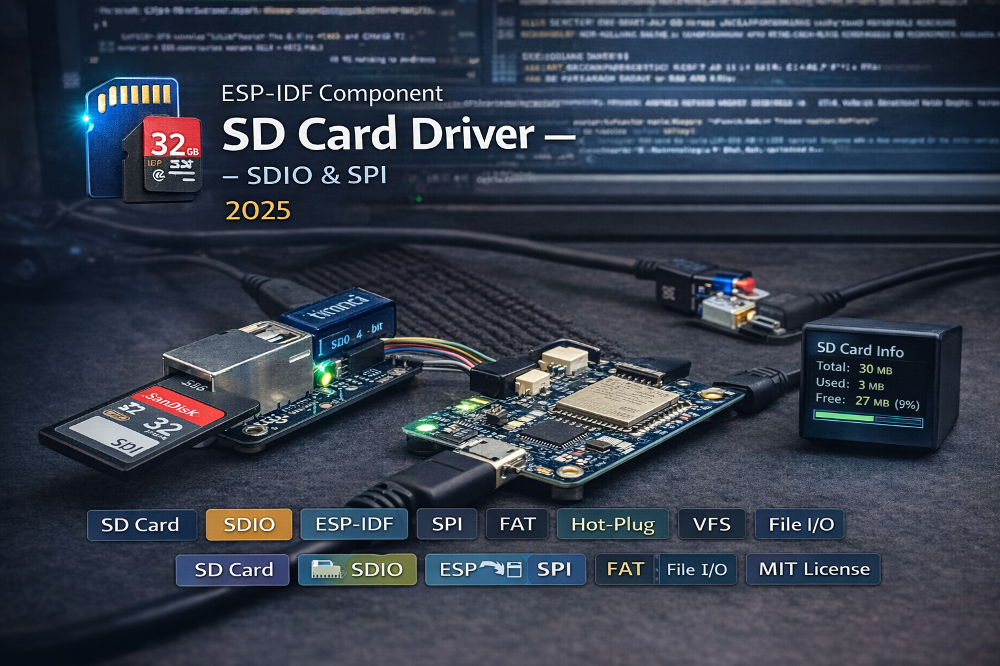

SD card driver for ESP-IDF with SDIO 4-bit/1-bit and SPI bus support. 21-function Arduino-style file API with automatic FAT mount, hot-plug detection via card detect GPIO, storage space monitoring, error tracking with 3-strike auto-degradation, status callbacks, and external SPI bus sharing. Zero external dependencies.

The driver supports four initialization modes via convenience macros: SD_CARD_SDIO_DEFAULT() for SDIO 4-bit (fastest), SDIO 1-bit for reduced pin count, SD_CARD_SPI_DEFAULT() for SPI with internally-created bus, and SD_CARD_SPI_EXTERNAL(host, cs) for attaching to a pre-existing SPI bus shared with other peripherals. Passing NULL to sd_card_init() defaults to SDIO 4-bit with standard pin assignments.
FAT filesystem mounting is automatic - the driver calls esp_vfs_fat internally and all file paths are auto-prepended with the configurable mount point (default /sdcard). The Arduino-style file API (sd_fopen, sd_fwrite, sd_fread, etc.) wraps standard C FILE* operations so users never deal with full VFS paths.
When a card detect GPIO is configured, sd_card_check() polls for insertion/removal and automatically mounts or unmounts the filesystem. A status callback registered via sd_card_on_status_change() fires on every transition. The error tracking system counts consecutive failures - after 3 strikes, the driver transitions to an error state. A successful operation resets the counter. sd_card_test_write() provides a built-in write capability test.
sd_card_get_info() fills an info struct with total, free, and used space in megabytes plus a usage percentage - useful for data logging applications that need to monitor remaining capacity. The API is defensive throughout: NULL config falls back to SDIO defaults, hot-plug functions gracefully no-op when no detect pin is set, and all file operations validate mount state before proceeding.